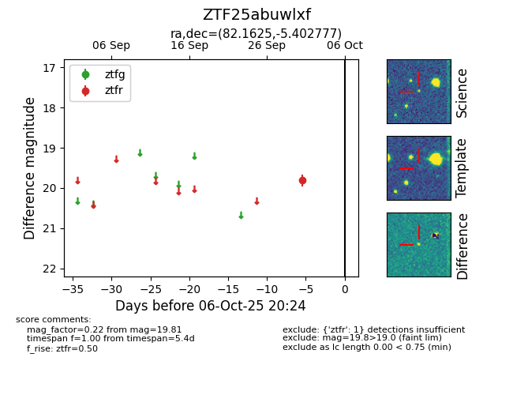

FINK: ZTF25abuwlxf
Lasair: ZTF25abuwlxf
ALeRCE: ZTF25abuwlxf
ZTF25abuwlxf (ztf,fink)
equatorial (ra, dec) = (82.1625,-5.40278)
galactic (l, b) = (208.2274,-20.85969)

last ztfr=19.81
1 ztfr detections